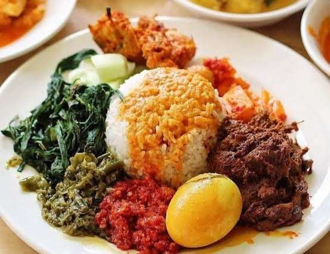

Kearifan lokal adalah pengetahuan, nilai, norma, dan praktik budaya yang unik dan diwariskan secara turun-temurun dalam suatu masyarakat, yang berkembang sebagai panduan hidup untuk menjaga keseimbangan dengan lingkungan, melestarikan identitas, dan mencapai kesejahteraan.
